Balili, Mankayan, Benguet
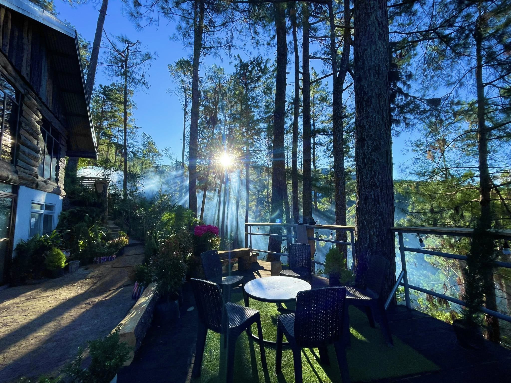
Welcome to Balili, a peaceful destination known for its beautiful views, fresh mountain air, and relaxing tourist spots. Discover simple yet amazing places perfect for relaxation and memorable experiences.
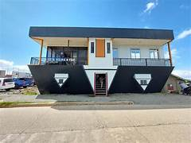
Upside Down Cafe and Homestay
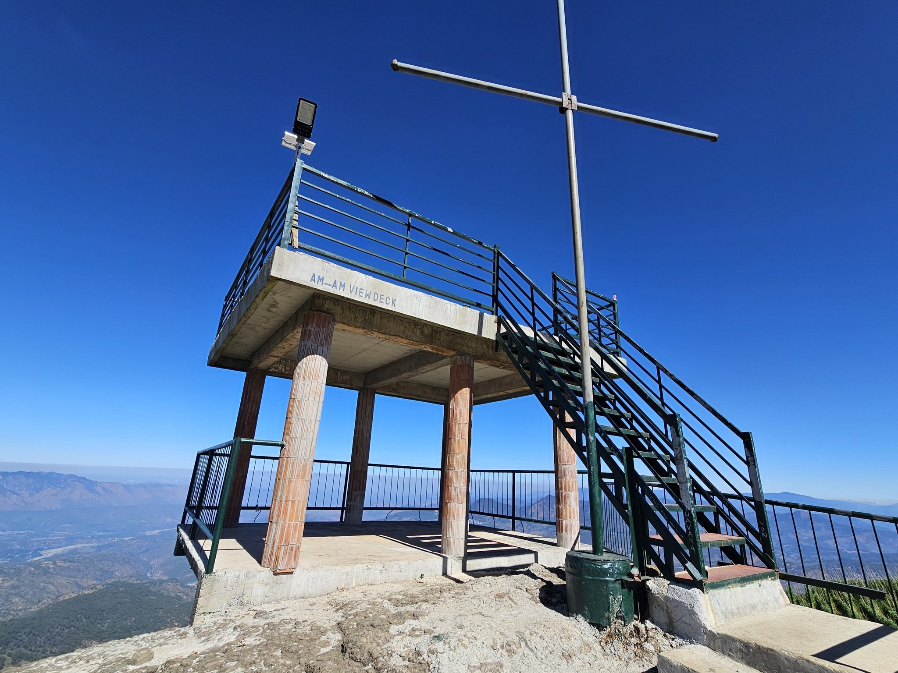
Madalipey View Deck
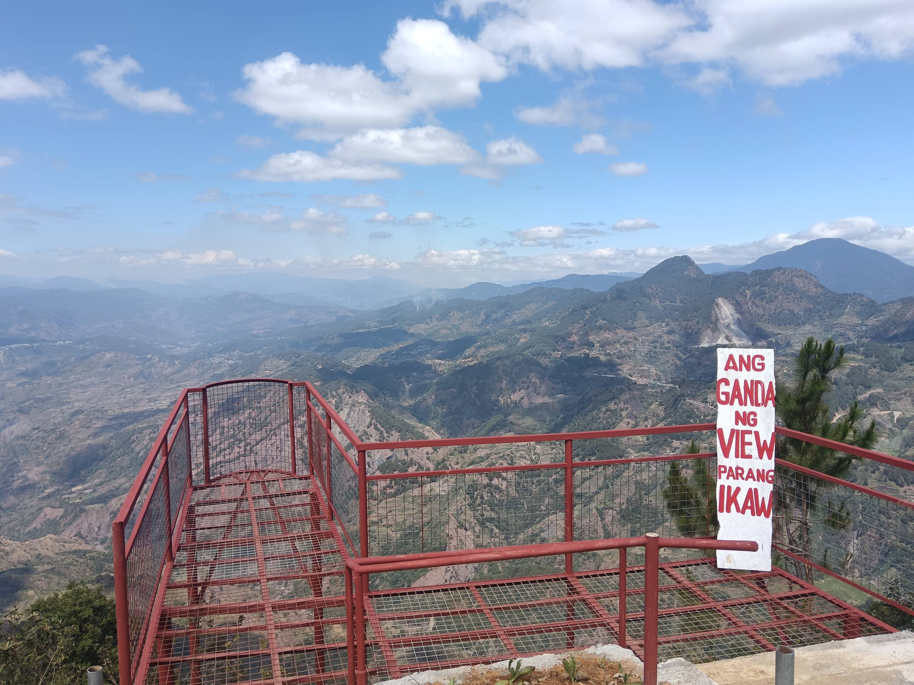
Baangan Escaped
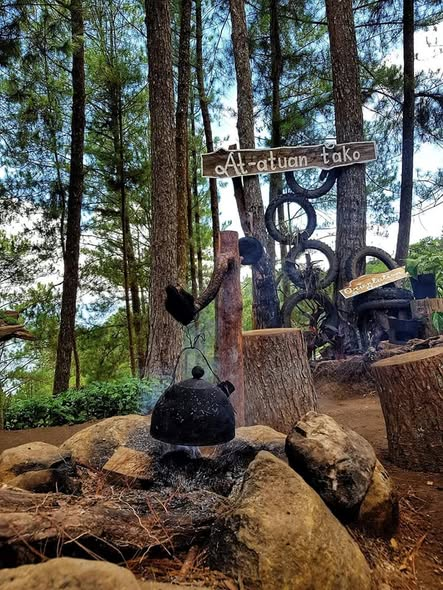
Lay-odan Farm
Balili, Mankayan, Benguet
Balili is a peaceful and beautiful place known for its cool climate, fresh air, and scenic mountain views. It offers tourist spots where visitors can enjoy nature and take memorable photos.
This website was created to promote local tourism and help people discover the beauty of Balili. It also serves as a simple project to showcase different places worth visiting in the area.
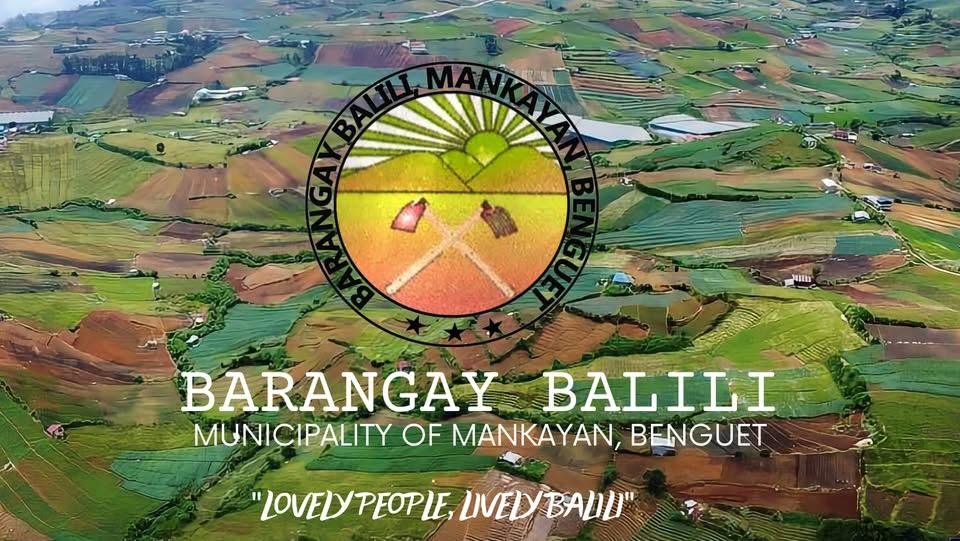
Cada, Balili, Mankayan, Benguet
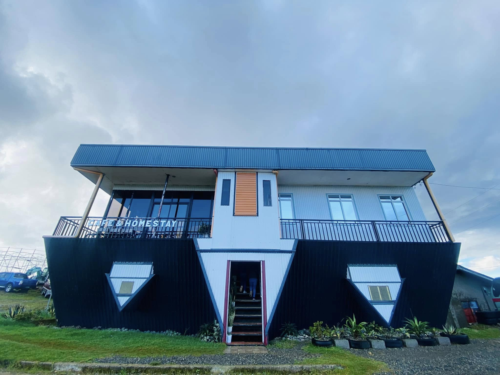
They serve their signature Balili Arabica Coffee, expertly prepared by the owner-barista, with favorites like Café Americano, Cappuccino, and Caramel Macchiato.
They also offer delicious meals similar to Good Taste Baguio—don't miss their pancit! Located in Cada Plateau, Buguias (15–20 minutes from Abatan), the café features an inverted house, stunning sea of clouds, cool weather, and scenic vegetable landscapes—perfect for a relaxing visit.
Am-Am, Balili, Mankayan, Benguet
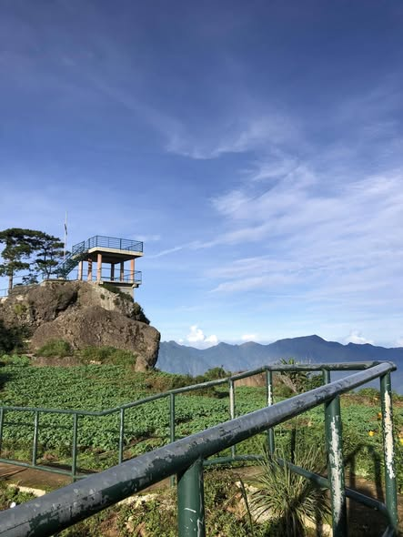
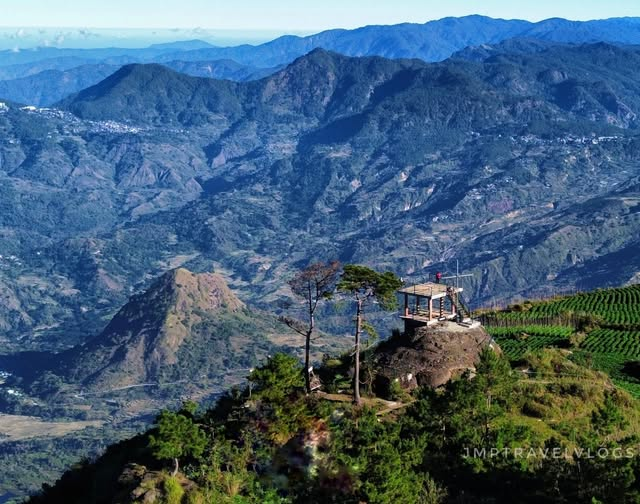
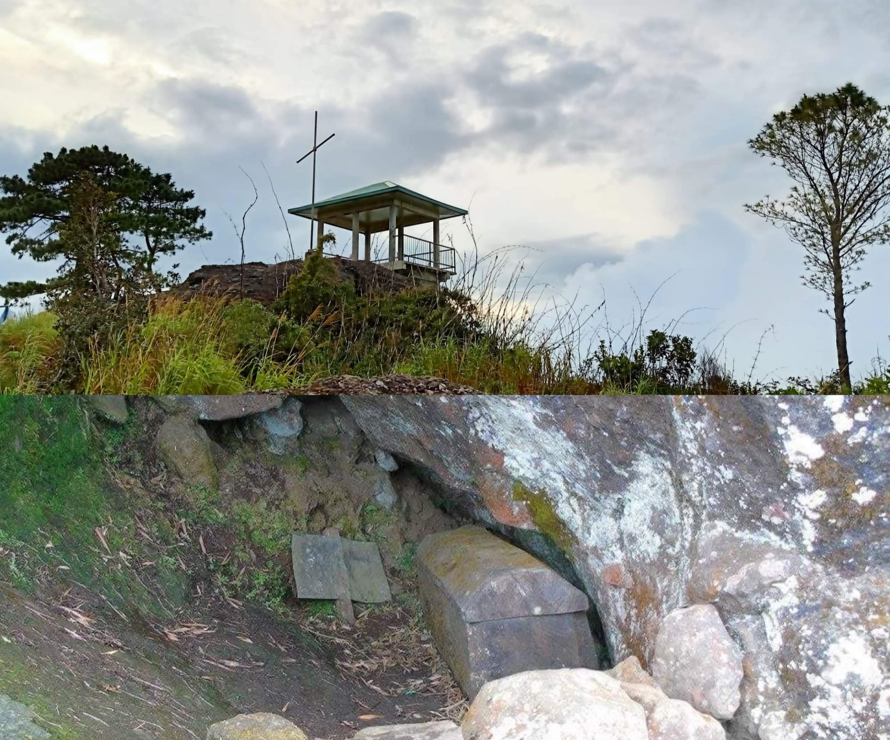
Am-am View Deck – A massive boulderstone on top of a mountain in Barangay Balili, Mankayan, offering breathtaking views of eastern Ilocos Sur, including historic Bessang and Tirad Passes. Enjoy scenic mountains of Tadian (Mt. Mogao), Sabangan (Mt. Kalawitan), Bauko (Mt. Polis), and surrounding vegetable gardens.
Beneath the deck lies an ancient pine-wood coffin that has lasted for centuries.
Am-Am, Balili, Mankayan, Benguet
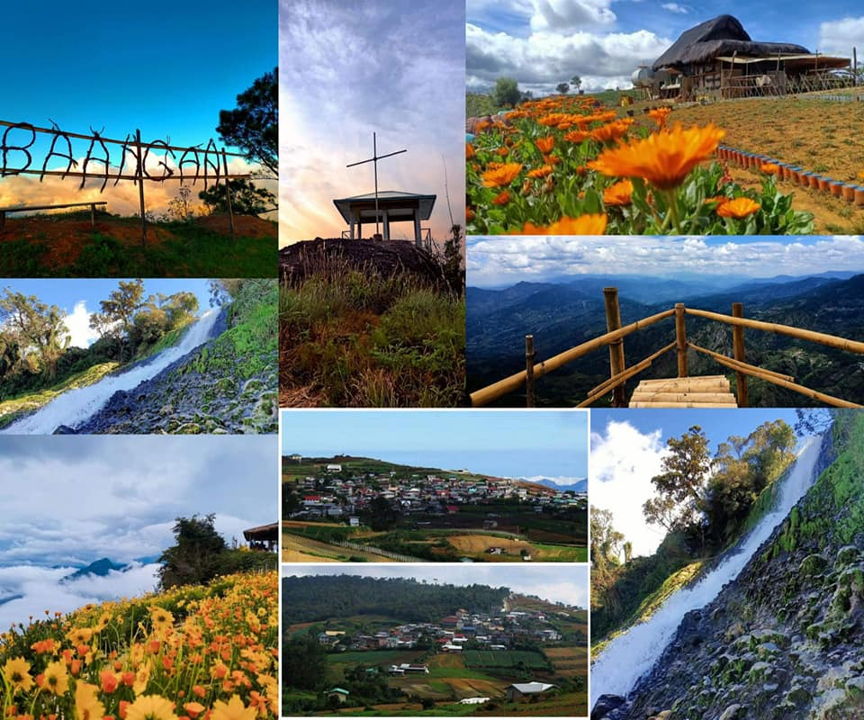
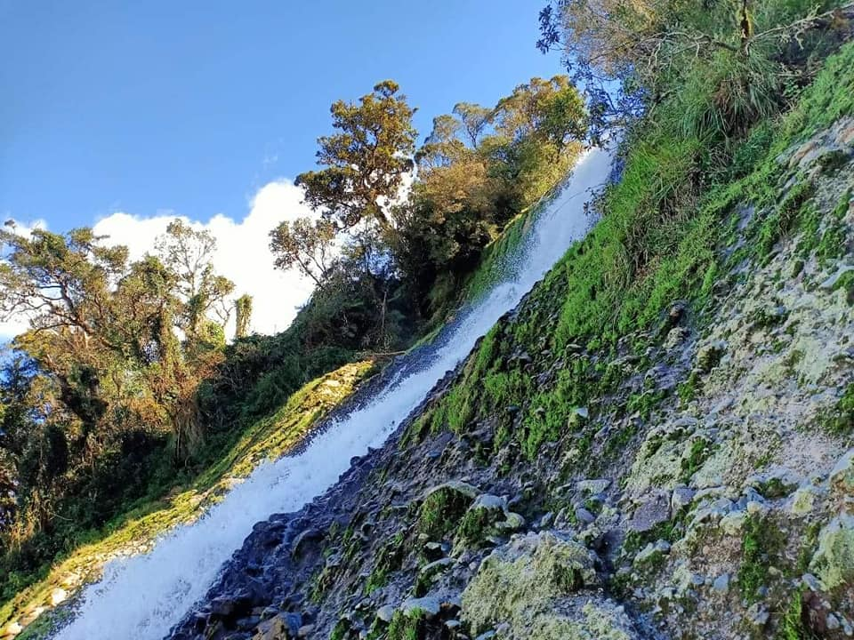
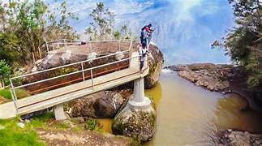
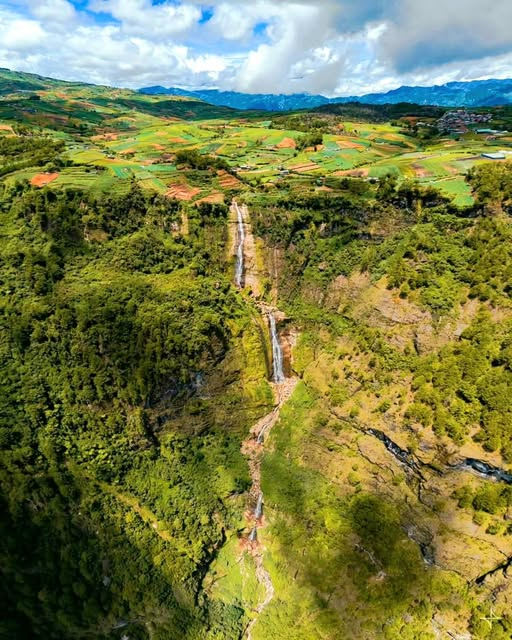
Inudey Falls & Baangan Escapade – Another hidden gem to add on your bucket list—the Inudey falls which is a 3-layered cascading waterfalls down from a massive cliff located in the boundary area of Mankayan, Benguet and Tadian, Mt. Province.
On top it was a vegetable farmlands with a stunning view of some parts of Benguet and Mountain Province areas. You may get to enjoy watching sunrise with sea of clouds view early in the morning.
Mogao, Balili, Mankayan, Benguet
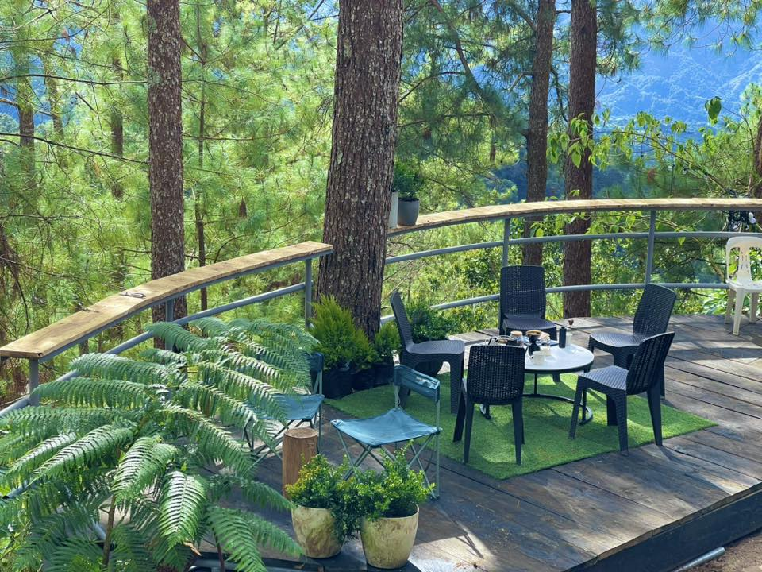
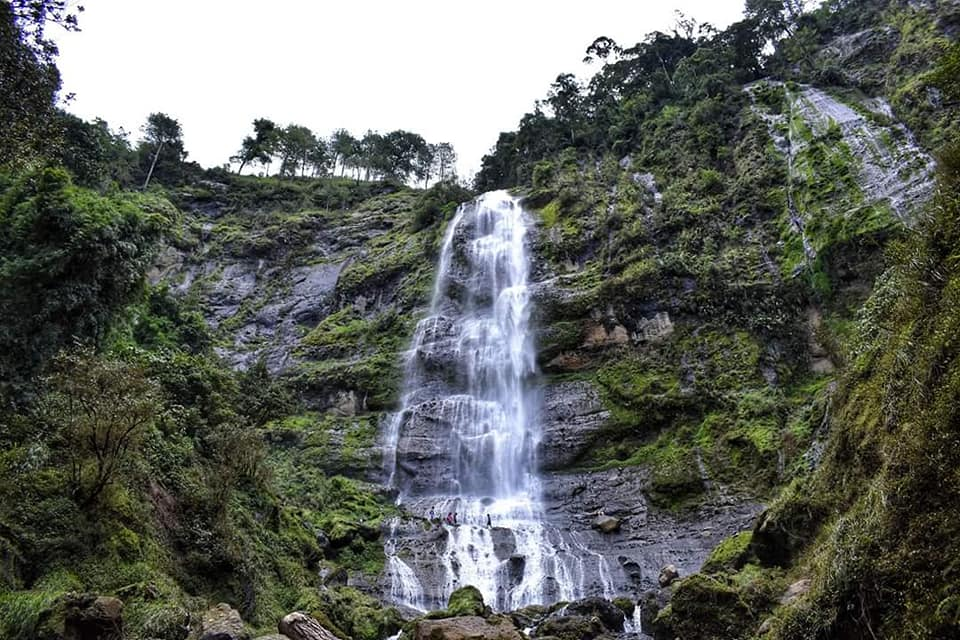
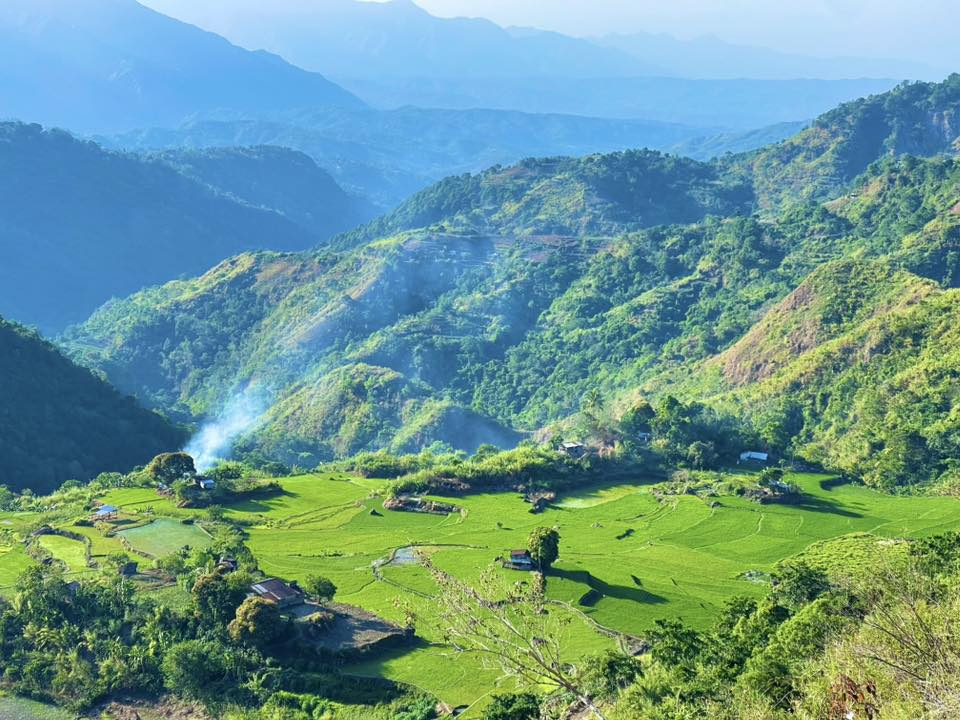
Lay-odan Farm – Experience the unique aroma, character, and soul of coffees grown from the same soil, carefully cupped and tested on-site. Nearby, Sodpak Falls offers a refreshing natural escape, with its cascading waters and scenic surroundings perfect for a relaxing visit.
Beyond the Four Corners of Lay-odan…
Step further and discover Dekkan – one of the many hidden corners of Balili.
Wild trails, quiet mountains, and stories waiting to be explored.